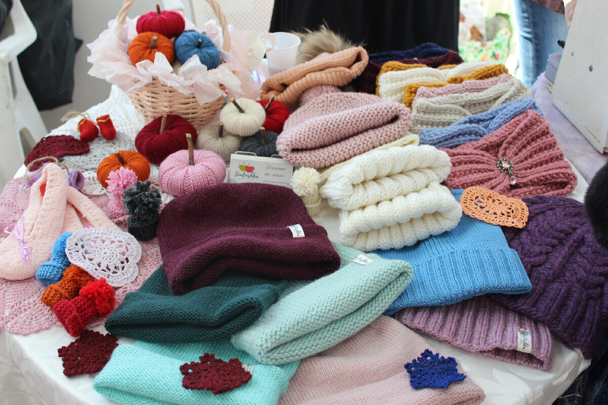
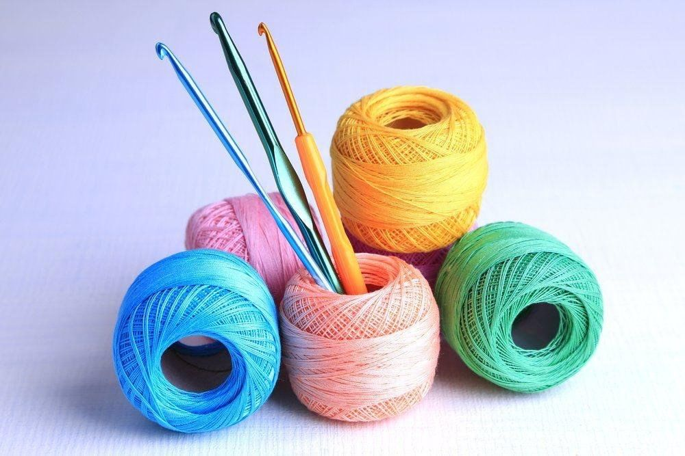
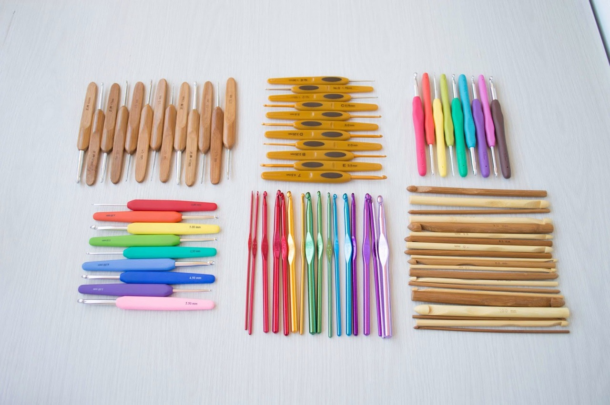
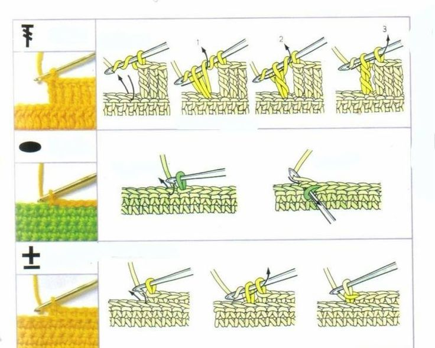
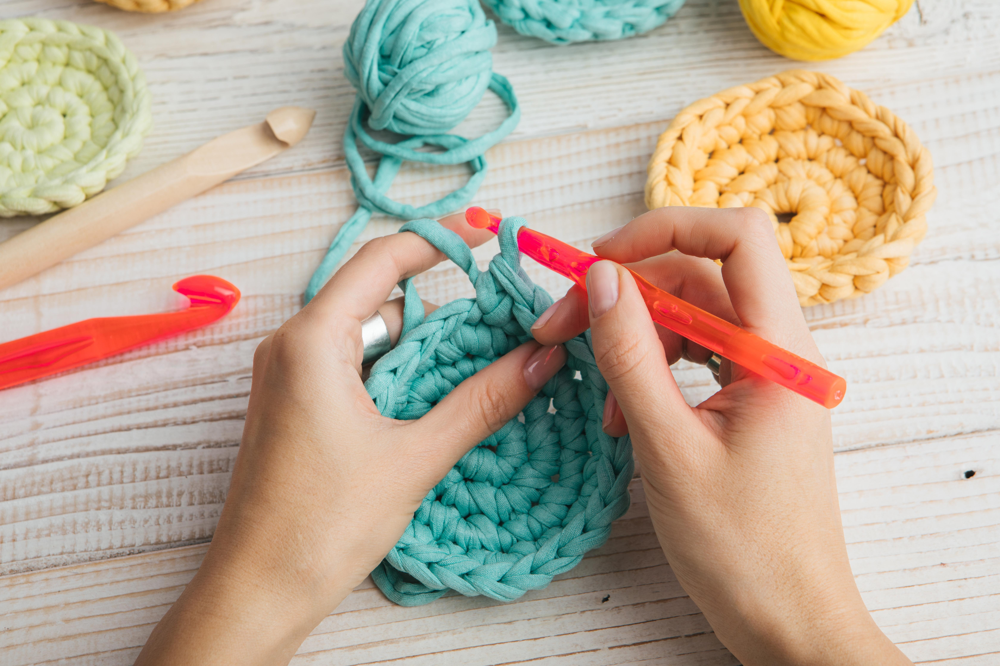
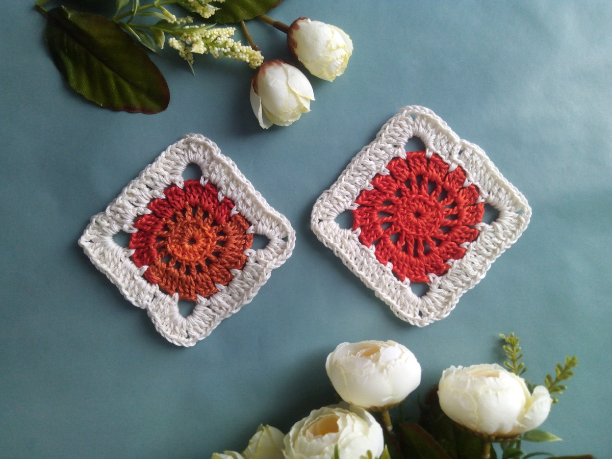
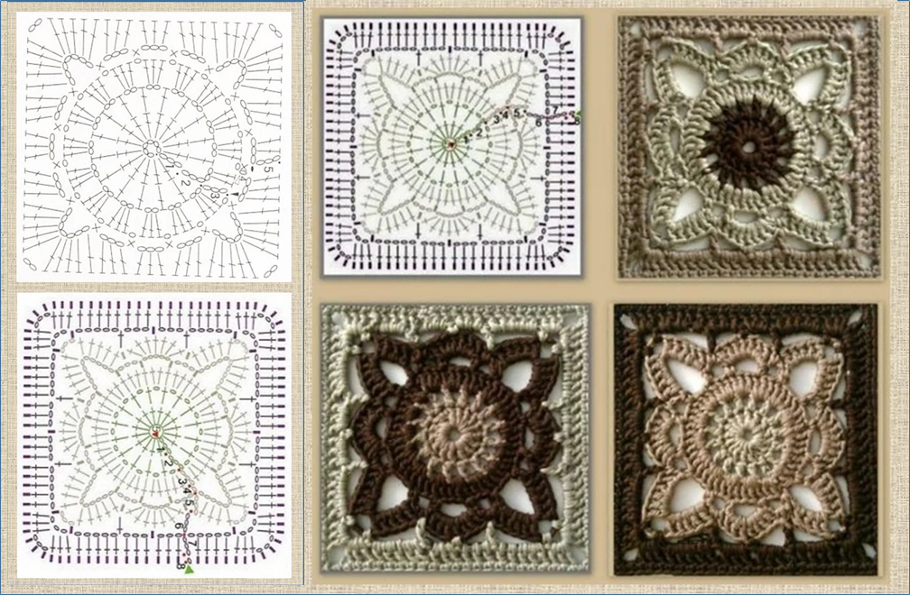
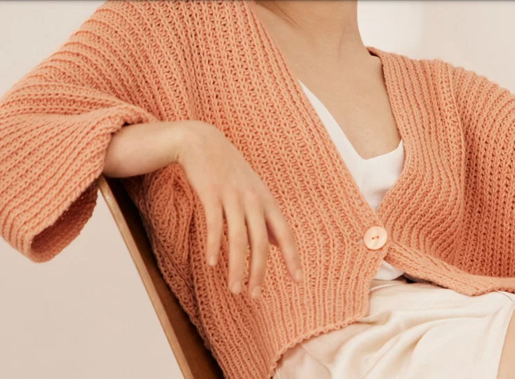

С чего начать вязание крючком
Вязание крючком — это увлекательное и полезное хобби, которое позволяет создавать уникальные вещи своими руками. Оно успокаивает, развивает моторику и дает безграничный простор для творчества.

Готовые вязаные изделия
Что вам понадобится для начала
Прежде чем приступить к первым петлям, подготовьте необходимые инструменты и материалы:
- Крючок - для начинающих идеально подойдет № 3,5 или 4
- Пряжа - выбирайте гладкую пряжу светлого цвета средней толщины
- Ножницы - любые острые ножницы для обрезания нити
- Иголка с большим ушком - для сшивания деталей

Крючки и пряжа

Разные виды крючков
Основные понятия и техники
Как держать крючок и пряжу
Существует два основных способа держать крючок. Выберите тот, который вам удобнее:
- Как карандаш - крючок удерживается между большим и указательным пальцами
- Как нож - крючок лежит на руке, придерживается большим и указательным пальцами
Базовые элементы вязания крючком
- Воздушная петля (в.п.) - основа любого вязания
- Столбик без накида (с.б.н.) - плотный и короткий столбик
- Столбик с накидом (с.н.) - более высокий столбик
- Полустолбик с накидом (п/с.н.) - промежуточный элемент
- Соединительный столбик (соед. ст.) - для переходов и соединения

Схема базовых петель

Процесс вязания
Ваш первый проект: квадратный мотив
Давайте свяжем простой квадрат, чтобы закрепить навыки:
Шаг 1: Начальная цепочка
- Сделайте скользящую петлю
- Провяжите 4 воздушные петли
- У вас получится цепочка из 5 петель
Шаг 2: Первый ряд
- Провяжите столбик с накидом в третью петлю от крючка
- Провяжите по одному столбик с накидом в следующие две петли
- Должно получиться 3 столбика с накидом
Шаг 3: Формируем угол
- Провяжите 3 воздушные петли для подъема
- Поверните вязание
- В первую петлю провяжите 2 столбика с накидом

Готовый квадратный мотив

Этапы вязания мотива
Полезные советы для новичков
Не торопитесь
На начальном этапе важнее аккуратность, а не скорость
Следите за натяжением
Равномерное натяжение — залог красивого полотна
Используйте маркеры
Отмечайте начало ряда, чтобы не сбиться
Не бойтесь распускать
Лучше распустить несколько рядов, чем получить кривое изделие

Пример готового изделия